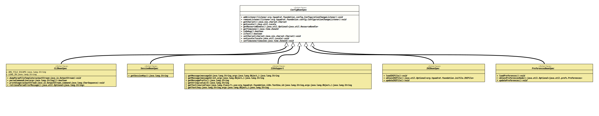

Interface ConfigBeanSpec
- All Known Subinterfaces:
CLIBeanSpec,I18nSupport,INIBeanSpec,PreferencesBeanSpec,SessionBeanSpec
The base for the specification of a configuration bean; the
final specification interface must also be annotated with
@ConfigurationBeanSpecification
in order to be recognised properly.
The generation process will generate only getter and setter methods,
other methods must be provided as default.
If the configuration bean should be initialised through command line
arguments, the specification interface must extend
CLIBeanSpec,
and if it should work with
Preferences,
the interface needs to extend
PreferencesBeanSpec. It could
extend both.
- Author:
- Thomas Thrien (thomas.thrien@tquadrat.org)
- Version:
- $Id: ConfigBeanSpec.java 1010 2022-02-05 19:28:36Z tquadrat $
- Since:
- 0.1.0
- UML Diagram
-

UML Diagram for "org.tquadrat.foundation.config.ConfigBeanSpec"
{kind=link}
-
Method Summary
Modifier and TypeMethodDescriptionvoidaddListener(ConfigurationChangeListener listener) Adds a newConfigurationChangeListenerto this configuration bean.Returns theCharsetthat is used throughout the program run.Returns the locale that is used throughout the program run.Returns theResourceBundlethat should be used to retrieve texts and messages for the application.Returns the time zone that is used throughout the program run.booleanisDebug()Returns a flag that indicates whether the application should produce debug output of some kind.booleanisTest()Returns a flag that indicates whether the application should produce test output of some kind.voidremoveListener(ConfigurationChangeListener listener) Removes the givenConfigurationChangeListenerfrom this configuration bean.voidsetCharset(Charset charset) Sets theCharsetthat should be used throughout the program run.
Setting a newCharsetwith this method will not change the system defaultCharset.voidSets the locale that should be used throughout the program run.
Setting a new locale with this method will not change the system default locale.voidsetTimezone(ZoneId timezone) Sets the time zone that should be used throughout the program run.
Setting a new time zone with this method will not change the system default time zone.
-
Method Details
-
addListener
Adds a newConfigurationChangeListenerto this configuration bean.- Parameters:
listener- The new listener.
-
removeListener
Removes the givenConfigurationChangeListenerfrom this configuration bean.- Parameters:
listener- The listener to remove.
-
getCharset
Returns theCharsetthat is used throughout the program run. If it was not modified by a call tosetCharset(Charset), this method will return the defaultCharsetor aCharsetthat was previously stored as a preference value, if configured.
TheCharsetcannot be set via a self-defined command line option, but through JVM options:java -Dfile.encoding=<charset> <program> <program_options …>- Returns:
- The
Charset. - See Also:
-
getLocale
Returns the locale that is used throughout the program run. If it was not modified by a call tosetLocale(Locale)this method will return the default locale or a locale that was previously stored as a preference value, if configured.
The locale cannot be set via a self-defined command line option, but through JVM options:java -Duser.country=<country_code> -Duser.language=<language_code> <program> <program_options …>- Returns:
- The locale.
- See Also:
-
getResourceBundle
@SpecialProperty(CONFIG_PROPERTY_RESOURCEBUNDLE) @ExemptFromToString Optional<ResourceBundle> getResourceBundle()Returns the
ResourceBundlethat should be used to retrieve texts and messages for the application.Usually the resource bundle is set under the hood (i.e. when the configuration bean specification implements
I18nSupport) or with the methodinitData(). But if necessary, a setter for this attribute can be added to the configuration bean specification like this:/** * Sets the * {@link ResourceBundle} * that should be used to retrieve texts and messages for the * application.<br> * <br>As default, there is no {@code ResourceBundle} set * ({@link #getResourceBundle()} * returns * {@link Optional#empty()}), * but it not allowed to call this method with the argument {@code null} * for the {@code bundle} argument. * * @param bundle The resource bundle. */ @SpecialProperty( CONFIG_PROPERTY_RESOURCEBUNDLE ) @CheckNull public void setResourceBundle( final ResourceBundle bundle );- Returns:
- An instance of
Optionalthat holds the resource bundle.
-
getTimezone
Returns the time zone that is used throughout the program run. If it was not modified by a call tosetTimezone(ZoneId)this method will return the default time zone or a time zone that was previously stored as a preference value, if configured.
The time zone cannot be set via a self-defined command line option, but through JVM options:java -Duser.timezone=<zone_id> <program> <program_options …>- Returns:
- The time zone.
- See Also:
-
isDebug
Returns a flag that indicates whether the application should produce debug output of some kind.- Returns:
trueif the application is in debug mode,falseotherwise.- See Also:
-
isTest
Returns a flag that indicates whether the application should produce test output of some kind.- Returns:
trueif the application is in test mode,falseotherwise.- See Also:
-
setCharset
Sets theCharsetthat should be used throughout the program run.
Setting a newCharsetwith this method will not change the system defaultCharset.- Parameters:
charset- The newCharset; ifnull, theCharsetwill be set to the default locale.- See Also:
-
setLocale
Sets the locale that should be used throughout the program run.
Setting a new locale with this method will not change the system default locale.- Parameters:
locale- The new locale; ifnull, the locale will be set to the default locale.- See Also:
-
setTimezone
Sets the time zone that should be used throughout the program run.
Setting a new time zone with this method will not change the system default time zone.- Parameters:
timezone- The new time zone; ifnullthe time zone will be set to the default time zone.
-